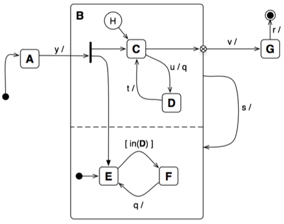
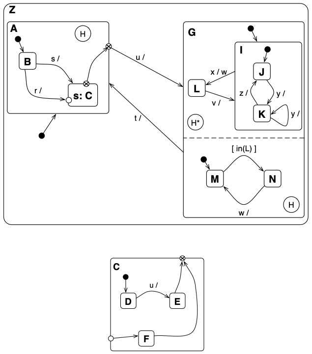
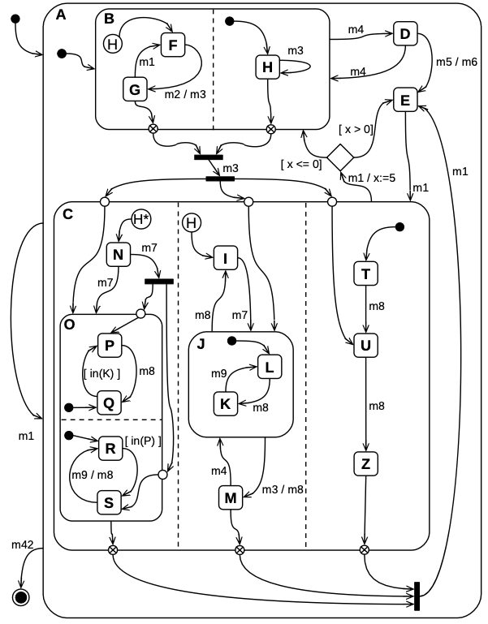

9 Practical Exercises: State Machines
This chapter provides a series of practical exercises to apply the concepts of UML State Machines discussed previously. Each exercise challenges you to trace the execution of a complex state machine by applying semantic rules to determine the stable configuration after each event.
9.0.1 Exercise 1: Orthogonal Regions and History
Problem: Consider the state machine diagram below. Starting from the initial configuration {A}, trace the system’s configuration through the given sequence of events.

Correction Details:
| Step | Initial Config. | Event | Final Config. | Justification |
|---|---|---|---|---|
| 1 | {A} |
y | {B,C,E} |
A -> B is the only possible transition; C and E are entered via the fork. |
| 2 | {B,C,E} |
u | {B,D,F} |
The C -> D transition fires. Its reaction sends a q event, which is consumed. The system enters D. Because the in(D) guard is now true, a transition to F is taken. The final stable state is {B,D,F}. |
| 3 | {B,D,F} |
q | {B,D,F} |
The system leaves F for E. Since it is still in state D, the in(D) guard is true, causing an immediate transition back to F for a stable state of {B,D,F}. |
| 4 | {B,D,F} |
t | {B,C,F} |
The system remains in B. The D -> C transition occurs. The system remains in F. |
| 5 | {B,C,F} |
q | {B,C,E} |
The system remains in B. The F -> E transition occurs. The system remains in C. |
| 6 | {B,C,E} |
s | {B,C,E} |
The system leaves B and re-enters it. C is restored because of the History state (H). E is activated because it’s the initial state of its region. |
| 7 | {B,C,E} |
u | {B,D,F} |
Same as step 2. |
| 8 | {B,D,F} |
s | {B,D,F} |
The system leaves B and re-enters it. D is restored due to History. E is activated as the initial state, but an immediate transition to F occurs because the in(D) guard is true. |
| 9 | {B,D,F} |
t | {B,C,F} |
The system remains in B. The D -> C transition occurs. The system remains in F. |
| 10 | {B,C,F} |
v | {G} |
The system leaves B for G. This is enabled by the exit point, as the active state C is connected to it. |
Key Concepts Illustrated:
- Orthogonal Regions: Modeling concurrent states that are active simultaneously.
- Run-to-Completion Semantics: How an event and its subsequent internal reactions are processed to completion before the next external event is handled.
- Shallow History (
H): The mechanism for remembering and restoring the last active substate within a region. - Forks and Exit Points: The syntax and semantics for managing the start and end of concurrent flows.
9.0.2 Exercise 2: Submachines and Deep History
Problem: Consider the state machine Z, which uses the submachine C. Starting from the initial configuration {Z, A, B}, trace the system’s configuration for the given event sequence.

Correction Details:
| Step | Initial Config. | Event | Final Config. | Justification |
|---|---|---|---|---|
| 1 | {Z, A, B} |
s | {Z, A, C, D} |
A remains active; the B -> C transition occurs; D is the initial state of the submachine C. |
| 2 | {Z, A, C, D} |
u | {Z, A, C, E} |
The D -> E transition occurs. E is an exit state that enables the A -> G transition. |
| 3 | {Z, A, C, E} |
r | {Z, A, C, E} |
Nothing happens. |
| 4 | {Z, A, C, E} |
u | {Z, G, I, J, M} |
The A -> G transition fires via the active exit point. I and J are activated as initial states in the top region, and M is the initial state of the bottom orthogonal region. |
| 5 | {Z, G, I, J, M} |
x | {Z, G, L, N} |
The I -> L transition fires, launching and consuming event w. The in(L) guard is now true, so the M -> N transition also fires. |
| 6 | {Z, G, L, N} |
v | {Z, G, I, J, N} |
Z and G remain active. The L -> I transition fires. J is restored because of the deep history state (H*). |
| 7 | {Z, G, I, J, N} |
z | {Z, G, I, J, N} |
Nothing happens. |
| 8 | {Z, G, I, J, N} |
y | {Z, G, I, K, N} |
The J -> K transition occurs. |
| 9 | {Z, G, I, K, N} |
t | {Z, A, C, D} |
The system leaves G for A. C is restored due to shallow history (H). D is activated as the initial state of C because the history of A is not deep. |
| 10 | {Z, A, C, D} |
u | {Z, A, C, E} |
Same as step 2. |
| 11 | {Z, A, C, E} |
u | {Z, G, I, K, N} |
The system leaves A for G via the exit point. In the top region, {I, K} is restored due to deep history. In the bottom region, N is restored due to its shallow history. |
| 12 | {Z, G, I, K, N} |
x | {Z, G, L, N} |
The I -> L transition fires, launching event w. This w event causes N -> M. The system enters L, making the in(L) guard true, which causes an immediate M -> N transition. The final stable state is {Z, G, L, N}. |
Key Concepts Illustrated:
- Submachine States: How a state can be a reference to another, reusable state machine definition, promoting encapsulation.
- Deep History (
H*) vs. Shallow History (H): This exercise provides a perfect side-by-side comparison. Shallow history restores the immediate substate, while deep history restores the entire nested configuration. - Interaction between Model Components: Tracing how transitions and history mechanisms work across the boundaries of composite states and submachines.
9.0.3 Exercise 3: Advanced Semantics and Priority Rules
Problem: For the highly complex state machine below, trace the configuration starting from {A, B, F, H}. This exercise will test your understanding of conflict resolution.

Correction Details:
| No. | Initial Config. | Event | Final Config. | Justification |
|---|---|---|---|---|
| 1 | {A, B, F, H} |
m1 | {A, B, F, H} |
The system leaves A and re-enters it. B is the initial state, F is restored due to History, and H is the initial state. |
| 2 | {A, B, F, H} |
m2/m3 |
{A, B, G, H} |
m2 is the event, m3 is the reaction. The F -> G transition fires, launching m3. A conflict arises between the high-level B -> C transition and the nested H -> H self-transition. The H -> H transition has priority because it is more deeply nested. m3 is consumed, and the final stable state is {A, B, G, H}. |
| 3 | {A, B, G, H} |
m4 | {A, D} |
The B -> D transition occurs. |
| 4 | {A, D} |
m4 | {A, B, G, H} |
The D -> B transition occurs. G is restored due to history, and H is activated as the initial state. |
| 5 | {A, B, G, H} |
m3 | {A, B, G, H} |
The system leaves H and re-enters it; the H -> H transition is the most deeply nested and thus has priority. |
| 6 | {A, B, G, H} |
m1 | {A, B, F, H} |
The G -> F transition is the most deeply nested. |
| 7 | {A, B, F, H} |
m1 | {A, B, F, H} |
The system leaves A and re-enters it. B is the initial state, F is restored due to History, and H is the initial state. |
| 8 | {A, B, F, H} |
m8 | {A, B, F, H} |
Nothing happens. |
| 9 | {A, B, F, H} |
m3/m8 |
{A, B, F, H} |
The system leaves H and re-enters it. The H -> H transition is the most deeply nested (the reaction m8 is not considered here). |
| 10 | {A, B, F, H} |
m1 | {A, B, F, H} |
Same as step 7. |
Key Concepts Illustrated:
- The UML Priority Rule: This exercise provides a clear, practical example of conflict resolution. The rule—“deepest source state wins”—is not just theoretical; it dictates the machine’s behavior.
- Reactions and Internal Events: Demonstrates how a transition’s action can trigger a new event that is immediately processed within the same “run-to-completion” step.
- Complex Transitions: Shows how to trace execution across multiple levels of hierarchy and through exit points that depend on the configuration of multiple orthogonal regions.